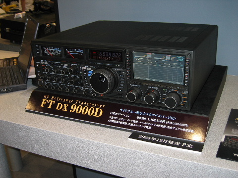
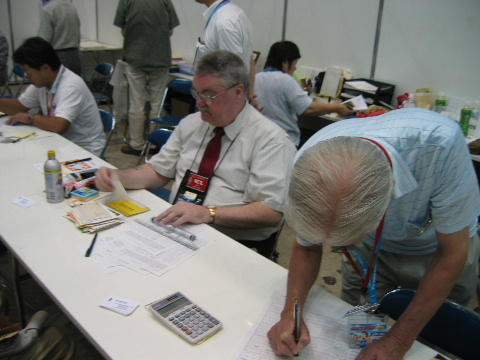
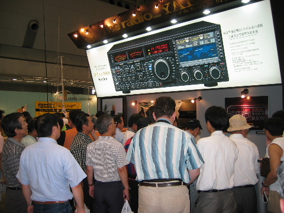

Reportの読み方

Ham Fair 2004
[Back Issues Aug.2004]
TIME:UTC(JST-09:00)
Report from JA1RJU (PM95sq)
31.Aug.2004(15:00c)
|
◎ 九州に上陸、中国地方から日本海へ抜けた大型台風16号の影響で、未明から関東地方でも強風が吹き荒れた。
|
30.Aug.2004(15:00c)
*BY-TV 00:00- 49.750 --
*BY-TV 09:00- 49.750 --
29.Aug.2004(15:00c)
*BY-TV 02:00- 49.750 --
*BY-TV 10:00- 49.750 --
28.Aug.2004(15:00b)
*BY-TV 12:00- 49.750 --
27.Aug.2004(15:00c)
*BY-TV 05:00- 49.750 --
*9M-TV 06:00- 48.240/260 --
26.Aug.2004(15:00c)
*BY-TV 11:00- 49.750 --
25.Aug.2004(15:00c)
*BY-TV 05:00- 49.750 --
*??-TV 05:00- 48.250 --
24.Aug.2004(15:00c)
*BY-TV 01:00- 49.750 --
*9M-TV 08:30- 48.240/260 --
23.Aug.2004(15:00c)
*BY-TV 01:00- 49.750 --
DU1EV/B 06:40- 50.008 CW Beacon
22.Aug.2004(15:00c)
◎ 8/21(土)-22(日)・Ham Fair 2004
*BY-TV 06:00- 49.750 --
ES6RQ 12:21 50.*** JT65A EME(KO28-PM95so)


話題のバーテック・スタンダード(YAESU)のFT-DX 9000シリーズは3機種
400WバージョンのSP付き外部スイッチング電源の最高機種FT-DX 9000MP(\1,155,000)
200WバージョンのTFT付き・内部スイッチング電源内蔵機種FT-DX 9000D(\1,102,500)
200WバージョンのTFTディスプレーなし FT-DX 9000 Contest(\546,000)(左)が選択可能！
21.Aug.2004(15:00b)
◎ 8/21(土)-22(日)・Ham Fair 2004
*BY-TV 00:00- 49.750 --


(左)今年のDXCCのフィールドチエックはNC1L・Bill Moore氏
バーテック・スタンダード(YAESU)のブースはFT-DX 9000シリーズが注目の的！？
20.Aug.2004(15:00b)
*BY-TV 00:00- 49.750 --
*9M-TV 02:00- 48.240/260 --
GD0TEP 11:21 50.*** JT65A EME(IO74-PM95so)
19.Aug.2004(15:00c)
*BY-TV 02:00- 49.750 --
*BY-TV 09:00- 49.750 --
*9M-TV 09:00- 48.240/260 --
DU1EV/B 09:50- 50.008 CW Beacon strong!
18.Aug.2004(15:00c)
*BY-TV 03:00- 49.750 --
VK6RSX 07:55- 50.304 CW Beacon strong!
17.Aug.2004(15:00d)
*BY-TV 01:00- 49.750 --
*9M-TV 08:00- 48.240/260 --
*VK-TV 08:00- 46.172 -- weak
16.Aug.2004(15:00d)
*BY-TV 00:00- 49.750 --
*9M-TV 02:00- 48.240/260 --
*VK-TV 08:00- 46.172 --
VK6RSX 08:30- 50.304 CW Beacon
VK4CXQ 09:30 50.110/105 CW
VK6RSX 10:00- 50.304 CW Beacon strong!
|
◎ 8月も中旬を過ぎ、強力なEsの発生も少なくなってきた。
今日も夕方から短時間ながらVKの入感もあり、そろそろ"秋のDXシーズン近し"と言いたいところだが、
サンスポットは確実に下降の一途をたどっているのであまり期待は出来ないかも。
太平洋方面の南北とのパスは今シーズンも十分可能だが、東西のパスはかなり難しくなるものと予想される。
|
15.Aug.2004(15:00c)
*BY-TV 03:00- 49.750 --
*9M-TV 07:00- 48.240/260 --
HL4CAE 08:31 50.100 CW
14.Aug.2004(15:00c)
*BY-TV 00:00- 49.750 --
VR2SIX/B 01:40- 50.075 CW Beacon weak!
13.Aug.2004(15:00c)
*BY-TV 00:00- 49.750 --
*BY-TV 14:00- 49.750 --
*9M-TV 14:00- 48.250 --
12.Aug.2004(15:00c)
*BY-TV 00:00- 49.750 --
11.Aug.2004(15:00b)
*BY-TV 00:00- 49.750 --
10.Aug.2004(15:00c)
*BY-TV 02:00- 49.750 --
*9M-TV 08:00- 48.250/260 --
09.Aug.2004(15:00c)
*BY-TV 00:00- 49.750 --
Report from JA1RJU (QM06cb)
08.Aug.2004(15:00d)
*BY-TV 00:00- 49.750 --
BN0F 04:37 50.115 CW
BN0F 05:08 50.115 SSB
07.Aug.2004(15:00d)
*BY-TV 00:00- 49.750 --
*9M-TV 05:00- 48.240/260 --
DU1EV/B 08:50- 50.008 CW Beacon
VR2SIX/B 08:50- 50.075 CW Beacon
6L0NJ/4 11:35 50.197 SSB
Report from JA1RJU (PM95sq)
06.Aug.2004(15:00c)
*BY-TV 01:30- 49.750 --
*9M-TV 05:30- 48.260 --
*BY-TV 12:30- 49.750 --
05.Aug.2004(15:00d)
*BY-TV 00:00- 49.750 --
*9M-TV 00:00- 48.240/260 --
VR2SIX/B 00:50- 50.075 CW Beacon
VR2SIX/B 04:00- 50.075 CW Beacon (still in)
VR2XLN 04:03 50.110 SSB
*BY-TV 09:00- 49.750 --
04.Aug.2004(15:00d)
*BY-TV 00:00- 49.750 --
DS1MFC 09:59 50.110 SSB
VR2SIX/B 10:40- 50.075 CW Beacon
VR2XLN 10:45 50.110 SSB
03.Aug.2004(15:00d)
*BY-TV 00:00- 49.750 --
*9M-TV 01:00- 48.240/260 --
9M2TO/B 07:20- 50.005 CW Beacon
DU1EV/B 07:20- 50.008 CW Beacon
VR2SIX/B 07:20- 50.075 CW Beacon
*??-TV 07:20- 48.250 -- 230-240deg peak!
DU1EV/B 09:00- 50.008 CW Beacon
VR2SIX/B 09:00- 50.075 CW Beacon
*9M-TV 09:00- 48.24/25/26-- strong!
02.Aug.2004(15:00c)
*BY-TV 00:00- 49.750 --
*9M-TV 09:00- 48.240/260 --
6K2DHP 09:29 50.120 SSB
01.Aug.2004(15:00c)
*BY-TV 00:00- 49.750 --
*BY-TV 15:00- 49.750 -- strong!